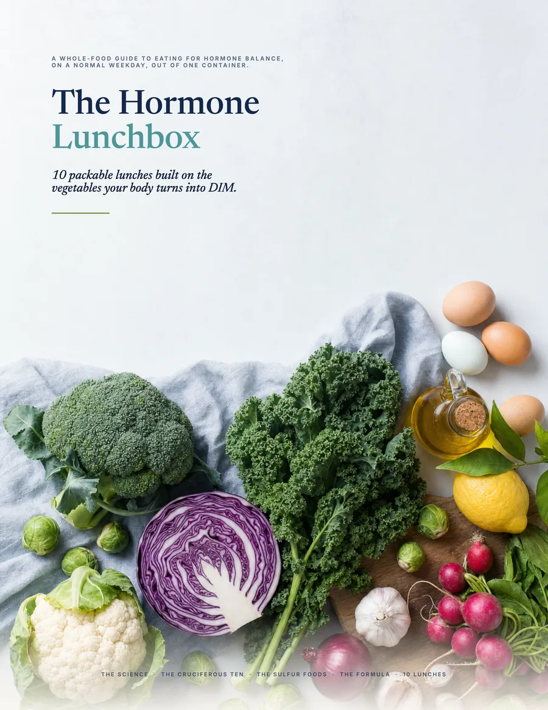
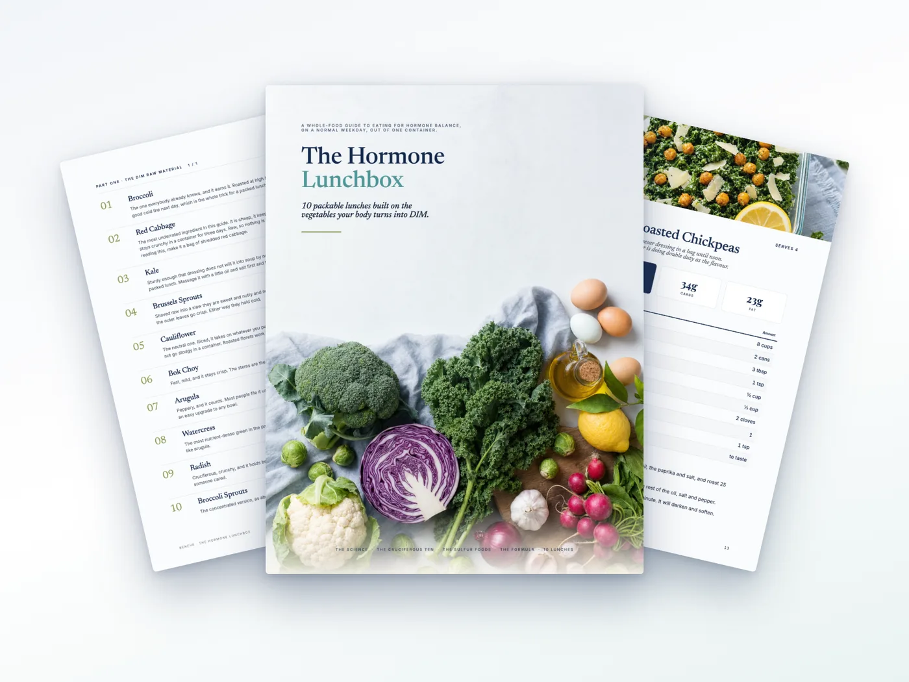
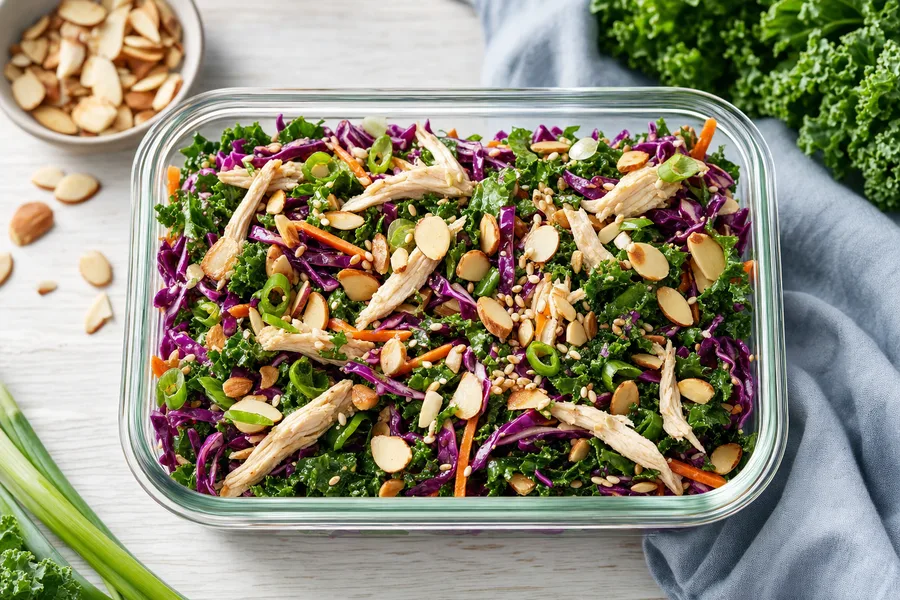
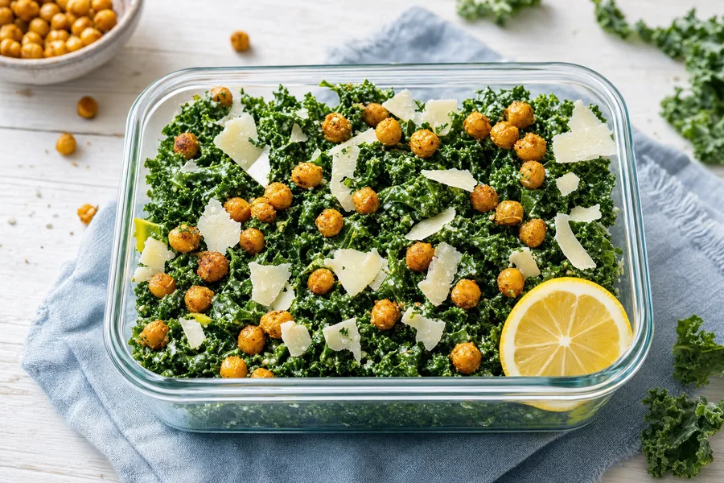
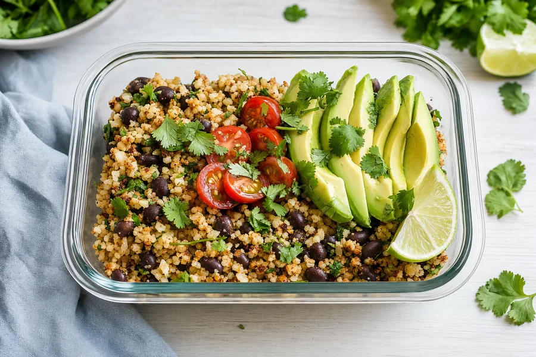

Download the FREE Hormone Lunchbox guide and get 10 lunches you can pack the night before, built on the everyday vegetables your body turns into DIM - a natural plant compound that influences how your body processes and metabolizes hormones.
100% Free guide.

A lunch that is mostly carbs lifts you and drops you an hour later. Every lunch in here is built around protein and fiber, so the afternoon holds.
No lunch means whatever is nearest, and whatever is nearest is rarely a vegetable. These are made the night before and grabbed on the way out.
Soggy greens by noon is why most people quit packing lunch. Every recipe says how many days it holds, and the dressing rules keep it crisp.

Everyday ingredients, no specialty store, and nothing that needs a microwave.
Each one fits a single container and says how many days it keeps. Most take under fifteen minutes.
The vegetables your body turns into DIM, and the one thing worth knowing about using each of them.
The everyday foods your body builds its own glutathione from. Most of them are already in your fridge.
Five slots. Fill them any way you like and you can build your own lunches without a recipe.
Three pans and a chopping board, and most of the week is handled before it starts.
Everything grouped so you can shop straight off it, plus a one page cheat sheet for the fridge door.



Download the 100% free guide and learn how, in under 2 minutes.
100% Free guide.
The information in this guide is for educational and informational purposes only and is not medical, nutritional, diagnostic, or treatment advice. Individual needs vary. If you are pregnant, nursing, managing a thyroid condition, or taking medication, talk to your healthcare provider before making significant changes to how you eat.